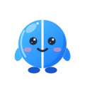
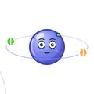
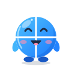
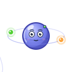

Duo is splitscreen.me's mascot: its split window, alive, one per player. Nucli is the mascot of the Nucleus Co-op handler tools: a quiet, helpful atom whose electrons are the players. Here is where they're designed, and how to use them.



The concept sheet: the characters, every animation, the product states, and the explorations.

Interface pieces that move the way the mascots do, with their code: for these tools, splitscreen.me, and anyone using the mascots.